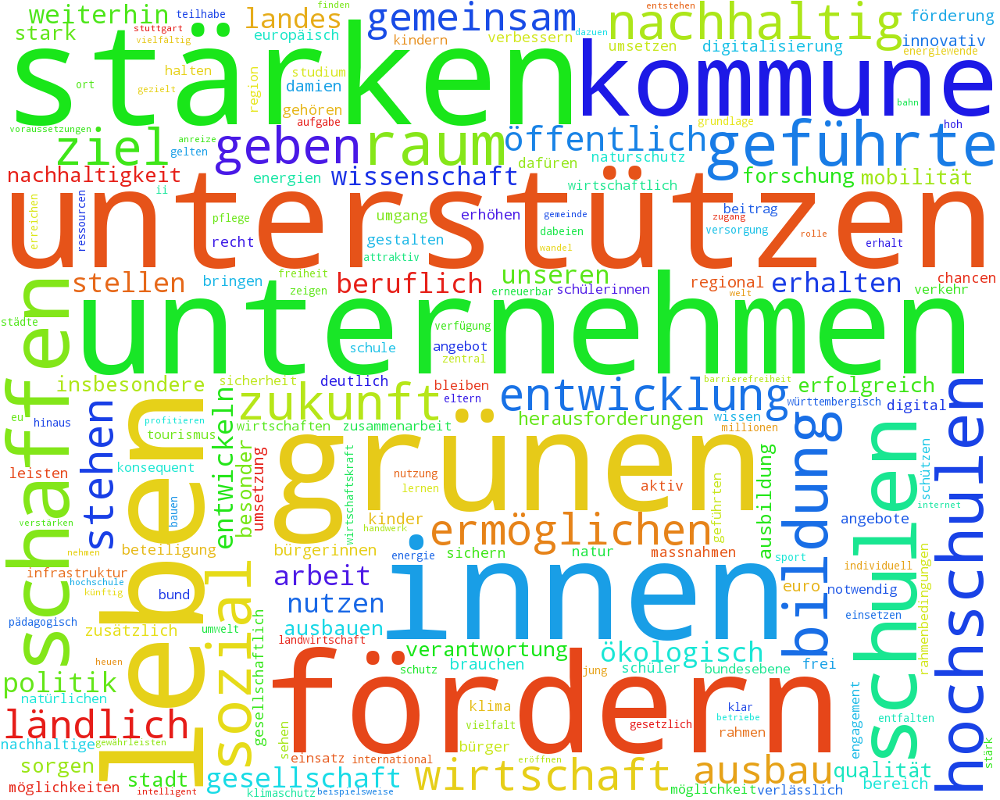

erschienen auf medienrevolte.de zur 3-fach Landtagswahl am 13. März 2016
Was "sagen" die Wahlprogramme?
DISCLAIMER: Das hier hat keinen Anspruch, auch nur der Hauch einer irgendwie
validen computerlinguistischen Analyse zu sein.
Lediglich ein bisschen Herumgespiele mit nltk & wordclouds.
Sachsen-Anhalt
Grüne
Wörter: 28016
Verschiedene Wörter: 6703
Sätze: 1685
Häufigste Wörter
| grünen | 152 |
| 90 | 149 |
| 76 | 77 |
| seite | 76 |
| stärken | 60 |
| fördern | 59 |
| öffentlich | 54 |
| kinder | 52 |
| unterstützen | 45 |
| entwickeln | 42 |
Formulierungen
| erneuerbar energien | 8 |
| raum ländlich | 5 |
| finanzpolitik nachhaltig | 3 |
| rechtsstaat verlässlich | 3 |
| umsetzung konsequent | 3 |
| gesund lebensmittel | 3 |
| ebene kommunal | 3 |
| offener software | 3 |
| künftig generation | 3 |
| lebensweisen selbstverständlich | 3 |
2-Grams
| 90 grünen | 149 |
| bürgerinnen bürger | 23 |
| kinder jugendliche | 18 |
| 76 kapitel | 15 |
| erneuerbaren energien | 12 |
| ländlich raum | 11 |
| grünen stehen | 9 |
| migrantinnen migranten | 7 |
| erneuerbar energien | 6 |
| kinder jugendhilfe | 6 |
3-Grams
| 90 grünen stehen | 9 |
| 90 grünen sehen | 5 |
| 76 90 grünen | 5 |
| 90 grünen treten | 5 |
| fordern 90 grünen | 4 |
| 90 grünen fordern | 4 |
| politik 90 grünen | 4 |
| fördern 90 grünen | 4 |
| 90 grünen unterstützen | 4 |
| 100 erneuerbar energien | 4 |
FDP
Wörter: 2835
Verschiedene Wörter: 1136
Sätze: 200
Häufigste Wörter
| bürger | 15 |
| leben | 11 |
| heimat | 10 |
| politik | 8 |
| regierung | 7 |
| unternehmen | 7 |
| brauchen | 7 |
| laterne | 6 |
| entwicklung | 6 |
| unseren | 6 |
Formulierungen
| klein weltmeisterfirmen | 2 |
| deutsch sprache | 1 |
| angespannt situation jetzig | 1 |
| startups finanzprobleme innovativ | 1 |
| office hom | 1 |
| 30 minuten | 1 |
| sport organisiert | 1 |
| bisherig landespolitik | 1 |
| kopf best | 1 |
| mittelvergab zielgenau | 1 |
2-Grams
| männer frauen | 2 |
| 0391 543 | 2 |
| arbeit leben | 2 |
| bürger sachsen-anhalts | 2 |
| 561 92 | 2 |
| gescheiterten wirtschaftspolitik | 2 |
| fax 0391 | 2 |
| 92 88 | 2 |
| fleissig mutig | 2 |
| 39106 magdeburg | 2 |
3-Grams
| ausdruck gescheiterten wirtschaftspolitik | 2 |
| fleissig mutig intelligent | 2 |
| 0391 561 92 | 2 |
| fax 0391 543 | 2 |
| 561 92 88 | 2 |
| 0391 543 13 | 2 |
| 543 13 61 | 2 |
| beenden freien schulschliessungen | 1 |
| markteintritt konzentrieren wust | 1 |
| zukunft notwendig anschlag | 1 |
Die Linke
Wörter: 20337
Verschiedene Wörter: 5693
Sätze: 1275
Häufigste Wörter
| sozial | 51 |
| landes | 44 |
| öffentlich | 42 |
| entwicklung | 36 |
| arbeit | 34 |
| kommune | 32 |
| unterstützen | 31 |
| förderung | 30 |
| brauchen | 29 |
| ermöglichen | 29 |
Formulierungen
| raum ländlich | 7 |
| erneuerbar energien | 4 |
| union europäisch | 4 |
| gleichwertig lebensverhältnisse | 4 |
| ke lin | 3 |
| entwicklung wirtschaftlich | 3 |
| unternehmen mittelständisch | 3 |
| politisch bildung | 3 |
| dienstes öffentlich | 3 |
| hand öffentlich | 3 |
2-Grams
| ländlich raum | 10 |
| forschung entwicklung | 9 |
| schülerinnen schülern | 8 |
| sach sen-anhalt | 5 |
| kinder jugendliche | 5 |
| wirtschaftlich entwicklung | 5 |
| europäisch union | 5 |
| verfügung stellen | 4 |
| bildung kultur | 4 |
| lin ke | 4 |
3-Grams
| sozial gerechtigkeit zusammenhalt | 2 |
| iii wirtschaft arbeit | 2 |
| klein mittelständisch unternehmen | 2 |
| konzept grundzentral versorgungsraums | 2 |
| flughafen leipzig halle | 2 |
| regional ausgewogen erreichbar | 2 |
| bildung kultur wissensgesellschaft | 2 |
| wirtschaft arbeit nachhaltigkeit | 2 |
| ausbau erneuerbarer energien | 2 |
| ii sozial gerechtigkeit | 2 |
CDU

Wörter: 19483
Verschiedene Wörter: 4927
Sätze: 998
Häufigste Wörter
| fördern | 47 |
| unterstützen | 46 |
| kommune | 43 |
| landes | 41 |
| stärken | 40 |
| unternehmen | 37 |
| erhalten | 37 |
| ländlich | 36 |
| zukunft | 36 |
| weiterhin | 35 |
Formulierungen
| raum ländlich | 17 |
| sozial marktwirtschaft | 6 |
| klar verhältnisse | 5 |
| raumes ländlich | 5 |
| arbeit“ „gut | 4 |
| teilhabe gesellschaftlich | 4 |
| privatrundfunkveranstalter regional | 4 |
| inner sicherheit | 4 |
| akademisch bildung | 3 |
| entwicklung wirtschaftlich | 3 |
2-Grams
| ländlich raum | 22 |
| unseres landes | 10 |
| sozial marktwirtschaft | 7 |
| schülerinnen schüler | 7 |
| demografisch wandel | 7 |
| halle leipzig | 7 |
| klar verhältnisse | 6 |
| städte gemeinde | 5 |
| ländlich raumes | 5 |
| universitäten hochschulen | 5 |
3-Grams
| vereinbarkeit familie beruf | 5 |
| lokal regional privatrundfunkveranstalter | 4 |
| städte gemeinde landkreise | 4 |
| flughafen halle leipzig | 4 |
| sicherheit bürgerinnen bürger | 3 |
| beruflich akademisch bildung | 3 |
| schuldenbremse landesverfassung verankern | 3 |
| klar verhältnisse 3 | 2 |
| attraktiv städte 9.1 | 2 |
| basis tarifvertrags entlohnte | 2 |
AfD
Wörter: 14055
Verschiedene Wörter: 4439
Sätze: 820
Häufigste Wörter
| fordern | 61 |
| deutsch | 29 |
| öffentlich | 27 |
| bürger | 26 |
| politik | 25 |
| deutschland | 25 |
| stärken | 24 |
| fördern | 24 |
| schaffen | 23 |
| landes | 23 |
Formulierungen
| raum ländlich | 7 |
| bürgerwehr freiwillig | 4 |
| direkt demokratie | 4 |
| parteien etabliert | 3 |
| eingetragen lebenspartnerschaft | 3 |
| ausgestaltung familienfreundlich | 3 |
| öffentlich dienst | 3 |
| inner sicherheit | 3 |
| pflegerisch versorgung | 2 |
| masse besonder | 2 |
2-Grams
| ländlich raum | 17 |
| inner sicherheit | 8 |
| unseres landes | 7 |
| alternative deutschland | 6 |
| direkt demokratie | 5 |
| etabliert parteien | 5 |
| politik verwaltung | 4 |
| bürokratisch hürden | 4 |
| politisch verfolgte | 4 |
| politik ländlich | 4 |
3-Grams
| politik ländlich raum | 4 |
| modells „studieren kind“ | 3 |
| ehe eingetragenen lebenspartnerschaft | 3 |
| medizinisch pflegerisch versorgung | 3 |
| modellprojekte familienfreundlich ausgestaltung | 3 |
| gleichstellung ehe eingetragenen | 3 |
| vertrauen politik verwaltung | 2 |
| auswirkungen staatlich handelns | 2 |
| 1.9 erleichterung familiengründung | 2 |
| familiengründung förderung modells | 2 |
SPD
Wörter: 21212
Verschiedene Wörter: 4686
Sätze: 1386
Häufigste Wörter
| | 372 |
| kluge | 63 |
| unterstützen | 52 |
| arbeit | 50 |
| bildung | 49 |
| sozial | 42 |
| öffentlich | 41 |
| entwicklung | 37 |
| wirtschaft | 37 |
| unternehmen | 36 |
Formulierungen
| stark wirtschaft | 8 |
| inner sicherheit | 8 |
| erneuerbar energien | 5 |
| engagement ehrenamtlich | 4 |
| entwicklung demografisch | 4 |
| politisch bildung | 4 |
| raum ländlich | 4 |
| union europäisch | 4 |
| ausseruniversitär forschungseinrichtungen | 4 |
| finanzierung auskömmlich | 3 |
2-Grams
| spd-sachsen-anhalt 2016-2021 | 34 |
| kluge | 21 |
| iv lebenswertes | 19 |
| wirtschaft arbeit | 17 |
| starke wirtschaft | 17 |
| bürgerinnen bürger | 16 |
| sozial sicher | 15 |
| iii sozial | 15 |
| investition zukunft | 12 |
| bildung investition | 12 |
3-Grams
| starke wirtschaft arbeit | 17 |
| iii sozial sicher | 15 |
| bildung investition zukunft | 12 |
| ii bildung investition | 11 |
| aufbruch iv lebenswertes | 9 |
| spd-sachsen-anhalt 2016-2021 starke | 8 |
| 2016-2021 iv lebenswertes | 8 |
| 2016-2021 starke wirtschaft | 8 |
| spd-sachsen-anhalt 2016-2021 iv | 8 |
| bild staat verwaltung | 7 |
Rheinland-Pfalz
Grüne
Wörter: 40412
Verschiedene Wörter: 7934
Sätze: 2299
Häufigste Wörter
| kommune | 91 |
| brauchen | 77 |
| stärken | 76 |
| unterstützen | 74 |
| erreichen | 66 |
| sozial | 63 |
| stehen | 56 |
| siehen | 56 |
| geht‘s | 53 |
| rlp | 52 |
Formulierungen
| erneuerbar energien | 13 |
| teilhabe gesellschaftlich | 9 |
| bezahlbar wohnraum | 9 |
| raum ländlich | 8 |
| städte kreisfrei | 5 |
| ebene kommunal | 5 |
| wandel demografisch | 5 |
| ländlich region | 4 |
| individuell förderung | 4 |
| nachhaltig entwicklung | 4 |
2-Grams
| bürgerinnen bürger | 34 |
| geht‘s weitern | 26 |
| schülerinnen schüler | 15 |
| verbraucherinnen verbraucher | 15 |
| ländlich raum | 12 |
| gesellschaftlich teilhabe | 12 |
| rechnung tragen | 11 |
| vereinbarkeit familie | 10 |
| unseres landes | 9 |
| demografisch wandel | 9 |
3-Grams
| vereinbarkeit familie beruf | 9 |
| demokratie beteiligung siehen | 7 |
| beteiligung siehen 83 | 7 |
| „global denken lokal | 4 |
| schule siehen 74 | 4 |
| denken lokal handeln“ | 4 |
| religiös weltanschaulich orientierungen | 3 |
| flächendeckende hochwertig kinderbetreuung | 3 |
| teilhabe ermöglichen anfang | 3 |
| arbeit sozial teilhabe | 3 |
FDP
Wörter: 32604
Verschiedene Wörter: 7547
Sätze: 1692
Häufigste Wörter
| fordern | 64 |
| freien | 62 |
| unternehmen | 61 |
| kommune | 51 |
| entwicklung | 51 |
| insbesondere | 51 |
| schulen | 48 |
| landes | 45 |
| unterstützen | 45 |
| förderung | 45 |
Formulierungen
| schulen berufsbildend | 6 |
| raum ländlich | 5 |
| erneuerbar energien | 5 |
| deutschland bundesrepublik | 5 |
| haushalte öffentlich | 5 |
| strukturschwach region | 5 |
| zentral aufgabe | 4 |
| unternehmen mittler | 4 |
| ländlich entwicklung | 4 |
| deutsch sprache | 4 |
2-Grams
| bürgerinnen bürger | 21 |
| schau vorn | 16 |
| landwirtschaft weinbau | 13 |
| freien fordern | 12 |
| mrd euro | 9 |
| unseres landes | 9 |
| ländlich raum | 9 |
| ländlich räume | 8 |
| forschung entwicklung | 8 |
| berufsbildenden schulen | 7 |
3-Grams
| ausgaben forschung entwicklung | 5 |
| wirtschaftlich entwicklung landes | 3 |
| klein mittler unternehmen | 3 |
| gap 2014 2020 | 3 |
| qualität forschung lehre | 3 |
| markt wettbewerb energiepolitik | 3 |
| zukunft unseres landes | 2 |
| einzelbetrieblich investitionsförderung ländlich | 2 |
| kenntnisse deutsch sprache | 2 |
| füreinander verantwortung übernehmen | 2 |
Die Linke
Wörter: 21452
Verschiedene Wörter: 5891
Sätze: 1688
Häufigste Wörter
| linke | 111 |
| sozial | 81 |
| öffentlich | 71 |
| kommune | 46 |
| recht | 42 |
| fordern | 38 |
| kinder | 37 |
| ausbau | 30 |
| stehen | 29 |
| artikel | 28 |
Formulierungen
| öffentlich daseinsvorsorge | 9 |
| union europäisch | 5 |
| fair löhne | 4 |
| bezahlbar wohnraum | 4 |
| schulen berufsbildend | 4 |
| teilhabe gesellschaftlich | 3 |
| forschung universitär | 3 |
| kommunal daseinsvorsorge | 3 |
| prekär beschäftigung | 3 |
| dienstleistungen öffentlich | 2 |
2-Grams
| bürgerinnen bürger | 19 |
| linke fordern | 17 |
| öffentlich daseinsvorsorge | 12 |
| linke treten | 8 |
| schülerinnen schüler | 7 |
| kinder jugendliche | 6 |
| gesellschaftlich teilhabe | 6 |
| armut bekämpfen | 6 |
| europäisch union | 6 |
| linke landtag | 5 |
3-Grams
| lernen gemeinsam vielfalt | 3 |
| infrastruktur ausbauen wohnraum | 3 |
| 1 arbeit faire | 3 |
| gesellschaftlich teilhabe versorgung | 3 |
| armut bekämpfen gesellschaftlich | 3 |
| 4 infrastruktur ausbauen | 3 |
| 8 demokratisch transparent | 3 |
| 10 friedlich überall | 3 |
| 2 armut bekämpfen | 3 |
| bekämpfen gesellschaftlich teilhabe | 3 |
CDU
Wörter: 26574
Verschiedene Wörter: 6711
Sätze: 1465
Häufigste Wörter
| geben | 56 |
| kommune | 51 |
| stehen | 43 |
| stärken | 40 |
| brauchen | 39 |
| fördern | 38 |
| wirtschaft | 37 |
| stellen | 36 |
| schaffen | 36 |
| bildung | 35 |
Formulierungen
| beruflich bildung | 7 |
| raum ländlich | 5 |
| sozial marktwirtschaft | 4 |
| welt digital | 4 |
| deutsch sprache | 4 |
| schulen berufsbildend | 4 |
| institutionell förderung | 3 |
| wertschöpfung regional | 3 |
| schnell internet | 3 |
| verwaltung bürgernah | 3 |
2-Grams
| ländlich raum | 15 |
| bürgerinnen bürger | 13 |
| unseres landes | 7 |
| beruflich bildung | 7 |
| ländlich region | 6 |
| sozial marktwirtschaft | 5 |
| verfügung stellen | 5 |
| bürgerinnen bürgern | 5 |
| länder kommune | 5 |
| grenzzentren hotspots | 5 |
3-Grams
| ländlich region unseres | 4 |
| finanzielles haushalten gesund | 3 |
| konsumverhalten solides finanzielles | 3 |
| rung lebensweise früh | 3 |
| region unseres landes | 3 |
| sozial ausgleich organisieren | 3 |
| verantwortungsbewusste erzeuger selbstbewusste | 3 |
| lebensweise früh erlernen | 3 |
| nachhaltiges konsumverhalten solides | 3 |
| vereinbarkeit familie beruf | 3 |
AfD

Wörter: 8177
Verschiedene Wörter: 2866
Sätze: 421
Häufigste Wörter
| politisch | 31 |
| fordern | 30 |
| bürger | 26 |
| deutschland | 25 |
| forschung | 21 |
| familien | 19 |
| listenplatz | 18 |
| schwerpunkte | 18 |
| wahlkreis | 18 |
| demokratie | 17 |
Formulierungen
| direkt demokratie | 6 |
| sozial marktwirtschaft | 4 |
| aufgabengerecht finanzausstattung | 3 |
| hand öffentlich | 3 |
| erneuerbar energien | 3 |
| technisch voraussetzungen entsprechend | 3 |
| repräsentativ demokratie | 2 |
| ebene kommunal | 2 |
| politisch einflussnahme | 2 |
| inner wahlkreis sicherheit | 2 |
2-Grams
| politisch schwerpunkte | 18 |
| forschung lehre | 10 |
| alternative deutschland | 8 |
| inner sicherheit | 7 |
| sozial marktwirtschaft | 6 |
| familien kindern | 5 |
| direkte demokratie | 5 |
| ländlich raum | 5 |
| direkt demokratie | 5 |
| öffentlich verwaltung | 4 |
3-Grams
| entsprechend technisch voraussetzungen | 3 |
| forschung lehre innovation | 3 |
| aufgabengerecht finanzausstattung kommune | 3 |
| integration pflicht option | 2 |
| stärkung regional landwirtschaft | 2 |
| volksentscheide korrektiv parteienherrschaft | 2 |
| vereinfachung verwaltung abbau | 2 |
| 5 inner sicherheit | 2 |
| verwaltung abbau bürokratie | 2 |
| 18 kirn bad | 2 |
SPD
Wörter: 17309
Verschiedene Wörter: 4209
Sätze: 1175
Häufigste Wörter
| unterstützen | 45 |
| stehen | 44 |
| zukunft | 43 |
| gesellschaft | 38 |
| stärken | 37 |
| kommune | 36 |
| gemeinsam | 35 |
| sozial | 31 |
| leben | 30 |
| schaffen | 29 |
Formulierungen
| kommend legislaturperiode | 6 |
| raum ländlich | 6 |
| dreyer malu ministerpräsidentin | 5 |
| sozial gerechtigkeit | 5 |
| hoh niveau | 5 |
| hochschulen unseren | 3 |
| erfolg wirtschaftlich | 3 |
| dreyer malu | 3 |
| öffentlich dienst | 3 |
| dual ausbildung | 3 |
2-Grams
| malu dreyer | 12 |
| bürgerinnen bürger | 12 |
| schülerinnen schüler | 9 |
| ministerpräsidentin malu | 8 |
| ländlich raum | 8 |
| hoh niveau | 7 |
| kommend legislaturperiode | 7 |
| sozial gerechtigkeit | 7 |
| unseres landes | 6 |
| familie beruf | 6 |
3-Grams
| ministerpräsidentin malu dreyer | 8 |
| vereinbarkeit familie beruf | 5 |
| familie beruf verbessern | 3 |
| gleichberechtigung frauen männern | 3 |
| malu dreyer stehen | 3 |
| gewalt eng sozial | 2 |
| 2015 deutsch pflegepreis | 2 |
| halten schuldenbremse konsolidieren | 2 |
| malu dreyer 2015 | 2 |
| verteilung flüchtlingen innerhalb | 2 |
Baden-Württemberg
Grüne

Wörter: 42341
Verschiedene Wörter: 7771
Sätze: 2306
Häufigste Wörter
| unterstützen | 105 |
| grünen | 101 |
| 90 | 91 |
| stärken | 79 |
| fördern | 73 |
| kommune | 69 |
| unternehmen | 69 |
| leben | 67 |
| schulen | 67 |
| schaffen | 66 |
Formulierungen
| raum ländlich | 24 |
| erneuerbar energien | 18 |
| umgang massvoll | 11 |
| modern energiepolitik | 10 |
| nachhaltig mobilität | 9 |
| lernen lebenslang | 6 |
| landwirtschaft bäuerlich | 6 |
| schnell internet | 6 |
| frühkindlich bildung | 6 |
| beruflich bildung | 5 |
2-Grams
| 90 grünen | 84 |
| ländlich raum | 37 |
| bürgerinnen bürger | 26 |
| schülerinnen schüler | 20 |
| leben stadt | 16 |
| wirtschaftskraft nachhaltigkeit | 16 |
| stärken entfalten | 15 |
| bildung stärken | 15 |
| viii leben | 15 |
| ii wirtschaftskraft | 14 |
3-Grams
| bildung stärken entfalten | 15 |
| viii leben stadt | 15 |
| ii wirtschaftskraft nachhaltigkeit | 14 |
| vi bildung stärken | 13 |
| umgang unseren natürlichen | 11 |
| paradigmenwechsel nachhaltig mobilitätspolitik | 11 |
| massvoll umgang unseren | 11 |
| energiepolitik schützen klima | 10 |
| unseren natürlichen ressourcen | 10 |
| moderne energiepolitik schützen | 10 |
FDP
Wörter: 21695
Verschiedene Wörter: 5109
Sätze: 698
Häufigste Wörter
| schulen | 48 |
| verantwortung | 41 |
| landes | 40 |
| schaffen | 38 |
| unterstützen | 36 |
| gesellschaft | 36 |
| sorgen | 33 |
| leben | 33 |
| staatlich | 33 |
| stärken | 32 |
Formulierungen
| angewandt wissenschaften | 8 |
| frei trägerschaft | 7 |
| deutsch sprache | 5 |
| beruflich schulen | 4 |
| diskurs gesellschaftlich | 3 |
| unternehmen mittelständisch | 3 |
| raum ländlich | 3 |
| hoh qualität | 3 |
| prozent-pflichtanteil 15 energien erneuerbar | 3 |
| gesellschaft freiheitlich | 3 |
2-Grams
| frei trägerschaft | 10 |
| bürgerinnen bürger | 10 |
| beruflich schulen | 10 |
| angewandt wissenschaften | 9 |
| sozial verantwortung | 9 |
| dafüren sorgen | 9 |
| schulen frei | 8 |
| freiheitlich gesellschaft | 8 |
| haupt- werkrealschulen | 6 |
| unseres landes | 6 |
3-Grams
| schulen frei trägerschaft | 8 |
| hochschulen angewandt wissenschaften | 6 |
| prozent-pflichtanteil erneuerbarer energien | 3 |
| klein mittler unternehmen | 3 |
| praxisfern pflichten nichtwohngebäude | 3 |
| sanierungsbremsen starren 15 | 3 |
| grundsatz „kein abschluss | 3 |
| modell bürgerschaftlich engagements | 3 |
| erneuerbarer energien praxisfern | 3 |
| erneuerbare-wärme-gesetz novellieren sanierungsbremsen | 3 |
Die Linke
Wörter: 26262
Verschiedene Wörter: 6830
Sätze: 1398
Häufigste Wörter
| sozial | 102 |
| öffentlich | 83 |
| fordern | 74 |
| frauen | 55 |
| fördern | 54 |
| förderung | 41 |
| politik | 40 |
| bildung | 39 |
| kinder | 38 |
| kommune | 37 |
Formulierungen
| erneuerbar energien | 15 |
| sozial spaltung | 11 |
| ökologisch wende | 9 |
| sozial gerechtigkeit | 9 |
| hand öffentlich | 6 |
| leben selbstbestimmt | 6 |
| öffentlich daseinsvorsorge | 4 |
| öffentlich dienst | 4 |
| medien öffentlich-rechtlich | 3 |
| raum ländlich | 3 |
2-Grams
| milliarde euro | 24 |
| bürgerinnen bürger | 19 |
| stuttgart 21 | 14 |
| schülerinnen schüler | 11 |
| sozial ökologisch | 11 |
| kommune stärken | 11 |
| sozial gerechtigkeit | 11 |
| sozial spaltung | 11 |
| erneuerbar energien | 10 |
| sichern sozial | 10 |
3-Grams
| stärken finanzspielräume ausbauen | 9 |
| sichern sozial spaltung | 9 |
| beschäftigung sichern sozial | 9 |
| kommune stärken finanzspielräume | 9 |
| sozial spaltung überwinden | 9 |
| sozial ökologisch wende | 9 |
| überwinden kommune stärken | 8 |
| spaltung überwinden kommune | 8 |
| diskriminierung bekämpfen vielfalt | 6 |
| vielfalt lebensweisen fördern | 6 |
CDU
Wörter: 35684
Verschiedene Wörter: 7386
Sätze: 2145
Häufigste Wörter
| schulen | 75 |
| kommune | 74 |
| schaffen | 73 |
| fördern | 72 |
| wirtschaft | 62 |
| unterstützen | 62 |
| stehen | 61 |
| stärken | 57 |
| ländlich | 55 |
| raum | 55 |
Formulierungen
| raum ländlich | 30 |
| dual ausbildung | 7 |
| gymnasium beruflich | 7 |
| union europäisch | 6 |
| älter generation | 5 |
| reife mittler | 5 |
| hoh qualität | 5 |
| beruflich schulen | 5 |
| augenmerk besonder | 5 |
| frühkindlich bildung | 5 |
2-Grams
| ländlich raum | 44 |
| kunst kultur | 24 |
| schülerinnen schüler | 15 |
| bürgerinnen bürger | 14 |
| milliarde euro | 13 |
| beruflich schulen | 12 |
| schulen kinder | 10 |
| unseres landes | 10 |
| mobilität zukunft | 10 |
| million euro | 9 |
3-Grams
| wirtschaft innovativ digital | 6 |
| vereinbarkeit familie beruf | 5 |
| solide finanzen schaffen | 5 |
| starkes europa welt | 5 |
| starke ländliche räume | 5 |
| engagement fördern anerkennen | 5 |
| kunst kultur stiften | 5 |
| kultur stiften identität | 5 |
| wissenschaft schafft zukunft | 4 |
| gemeinsam starke gesellschaft | 3 |
AfD
Wörter: 19936
Verschiedene Wörter: 5706
Sätze: 1141
Häufigste Wörter
| fordern | 80 |
| deutschland | 49 |
| deutsch | 47 |
| bürger | 39 |
| kinder | 34 |
| lehnen | 33 |
| stehen | 32 |
| fördern | 31 |
| führen | 29 |
| schaffen | 26 |
Formulierungen
| raum ländlich | 11 |
| deutsch sprache | 8 |
| inner sicherheit | 6 |
| direkt demokratie | 6 |
| erneuerbar energien | 4 |
| energien“ „erneuerbar | 4 |
| gesund entwicklung | 3 |
| parteien etabliert | 3 |
| grundordnung demokratisch freiheitlich | 3 |
| organisiert kriminalität | 3 |
2-Grams
| ländlich raum | 14 |
| unseres landes | 11 |
| alternative deutschland | 8 |
| deutsch sprache | 8 |
| ehe familie | 7 |
| inner sicherheit | 7 |
| erneuerbaren energien | 6 |
| direkt demokratie | 6 |
| partner wirtschaft | 4 |
| demokratisch grundordnung | 4 |
3-Grams
| freiheitlich demokratisch grundordnung | 4 |
| missbrauch leiharbeit werkverträgen | 3 |
| zubau „erneuerbar energien“ | 3 |
| landespolitik partner wirtschaft | 3 |
| „erneuerbar energien“ physikalisch | 3 |
| staat kontrolle art | 2 |
| 2 sicherheit wirksamere | 2 |
| leben ländlich raum | 2 |
| konsequent verfolgen strengern | 2 |
| zukunft unseres landes | 2 |
SPD

Wörter: 28699
Verschiedene Wörter: 6023
Sätze: 1497
Häufigste Wörter
| stärken | 81 |
| schaffen | 76 |
| unterstützen | 59 |
| ausbauen | 58 |
| einsetzen | 51 |
| verbessern | 50 |
| fördern | 50 |
| ausbau | 48 |
| unternehmen | 46 |
| zukunft | 46 |
Formulierungen
| kommend legislaturperiode | 20 |
| raum ländlich | 12 |
| öffentlich dienst | 7 |
| hoh niveau | 7 |
| erneuerbar energien | 6 |
| betrieblich ausbildung | 6 |
| bezahlbar wohnraum | 5 |
| schultag letzt | 5 |
| unternehmen mittler | 5 |
| unseren schulen | 4 |
2-Grams
| kommend legislaturperiode | 20 |
| ländlich raum | 19 |
| bürgerinnen bürger | 19 |
| schülerinnen schüler | 12 |
| meinung dialog | 11 |
| darübern hinaus | 11 |
| öffentlich dienst | 10 |
| beruflich schulen | 10 |
| deutlich erhöhen | 10 |
| hoh niveau | 9 |
3-Grams
| vereinbarkeit familie beruf | 8 |
| geburtstag letzt schultag | 5 |
| hochschulen angewandt wissenschaften | 5 |
| starke wirtschaft arbeit | 5 |
| ganztagsgarantie geburtstag letzt | 5 |
| kommend legislaturperiode fortsetzen | 5 |
| ausbau erneuerbaren energien | 5 |
| klein mittler unternehmen | 4 |
| kultus jugend sport | 3 |
| chancen digitalisierung nutzen | 3 |
@simonwoerpel |
medienrevolte.de
zurück nach oben
{kind=link}
{kind=link}
{kind=link}
{kind=link}
{kind=link}
{kind=link}
{kind=link}
{kind=link}
{kind=link}
{kind=link}
{kind=link}
{kind=link}
{kind=link}
{kind=link}
{kind=link}